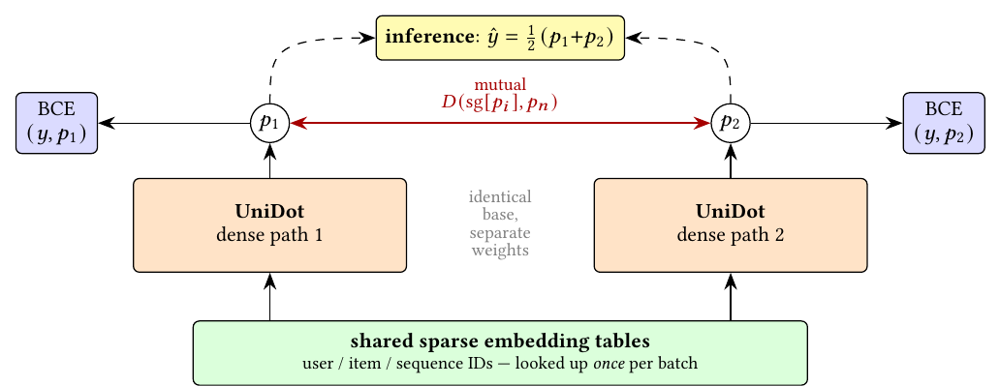

Contents · 9 sections
1What problem is it actually solving?2The whole picture first3How the sequences are encoded4FM Highway: dot products go straight to the classifier5Two paths that distill each other6Results: what each step added7Where I think it falls short8How a ranking team could try it9Verdict and scorecardSHARE
Ranking teams who are trying to merge a "feature-interaction tower" with a "sequence tower" should read this, mainly for two cheap components. UniDot is the entry by several Meta authors in the TAAC (Tencent Advertising Algorithm Competition) × KDD Cup 2026 conversion-prediction challenge on Tencent ad data. It scored a final AUC of 0.83217, second place, 0.00037 behind first. The core idea in one sentence: the embedding inner product in an FM (factorization machine) and the query·key product in attention are the same operation. So user fields, item fields and behavior sequences can all become tokens in one space and be processed by two parallel paths. In addition, the dot products computed at every layer are concatenated as they are and passed around the fusion layers directly to the classifier. The authors call this bypass the FM Highway. In the ablations it is the single most valuable component. The training trick of "two paths distill each other, serve only one" is also practical. Keep in mind that all evidence comes from offline AUC on one competition dataset, and many components add only a few hundredths of an AUC point.
What problem is it actually solving?
Industrial ranking models are usually built from two kinds of structure. One handles multi-field features such as user profiles and item attributes, learning crosses between fields with FM, DCN or Wukong (a stacked feature-interaction architecture from Meta). The other handles the user's behavior history, using DIN or a Transformer to find the history relevant to the current candidate. The common practice is to run the two towers separately and concatenate their outputs at the end. The problem is that profile fields and behavior sequences only meet at the last layer.
The task is post-click conversion prediction: given a user, a candidate ad and the user's history in 4 behavior domains, predict whether the user converts. The data comes from real Tencent ad logs: 35M training examples and 12M test examples, about 12% positives, and every feature is an anonymized integer ID or a fixed-length float vector. The test set covers the period after the training data, and most user–ad pairs in it never appeared in training. That is exactly where FM-style methods do well: user and item vectors are learned separately, so an unseen pair still gets a score from their inner product.
An illustration of why the two signals should meet early:
| Input (illustrative) | Feature interaction only | Behavior sequence only | Both together |
|---|---|---|---|
| Profile: 25 years old, often buys sports gear | Likes sports | — | — |
| Recent behavior: searched running shoes, viewed two watches | — | Currently looking at watches | — |
| Candidate ad: a sports watch | Category match, medium score | Matches recent behavior, medium score | Profile and recent interest both point to it, so the score should be clearly higher |
UniDot wants the "profile × candidate" and "history × candidate" matches to see each other at every layer, and it does not want these match signals to be washed out in a deep network.
The whole picture first
![UniDot architecture. On the left, user and item fields pass through tokenizers, and the 4 behavior domains pass through the sequence pipeline to become several sequence views. The dashed box in the middle is the macro-block repeated L times: on top, the token-mixing bus processes profile and item tokens; below, the sequence-retrieval bus lets item tokens retrieve from the behavior sequences; the two exchange information through FuseFFN in the middle. The red line is the FM Highway, which carries each layer's dot products past the fusion layers straight to the classifier on the right.](../../../figs/2026-08-19/personalization/2608.16797/fig1_arch.png)
The model splits into four stages along the data flow:
| Stage | What it does | Submitted configuration |
|---|---|---|
| Fields to tokens | User fields compressed to 22 tokens; item fields compressed into two sets: 12 for the mixing bus, 24 for the retrieval bus | d_model=128 |
| Sequence encoding | 4 behavior domains plus one timestamp-merged cross-domain stream, 5 in total, each encoded once | most recent 256 to 512 actions |
| Macro-block × 6 | Two buses in parallel, exchanging information once at the end of each layer and emitting that layer's dot products | 6 layers, 2 mixing sub-blocks each |
| Classifier | Compressed final states plus the concatenated dot products of all 6 layers, through a 2-layer MLP | plus an auxiliary head predicting conversion delay |
Field compression uses NCB (the authors' name for a two-layer MLP applied along the token axis): each field first looks up its own embedding, then this small network learns which fields combine into one token, instead of averaging with a fixed rule. A few unordered, high-value ID lists (for example the list of IDs a user interacted with) use FAFE (the authors' name for a candidate-weighted field embedding) instead: a DIN-style attention pool with the current candidate as the query, so the same field yields a different token for each candidate.
How the sequences are encoded
![The encoding pipeline for one sequence. The fields of each behavior event are first compressed to a uniform width, then pass in turn through a depthwise Conv1d (local patterns in a short window), a conditionally gated SwiGLU (the gate depends on user and item conditions, the value path holds only sequence content) and a one-layer causal Transformer (window w), and are finally projected into views for the retrieval bus and for pooling. The dashed line on the left shows several domains interleaved by timestamp into one merged stream that goes through the same pipeline.](../../../figs/2026-08-19/personalization/2608.16797/fig2_seq_trunk.png)
The pipeline has four steps, each aimed at one kind of structure in behavior data. Step one interleaves several domains by timestamp into a merged stream, so the model directly sees which domain's action came first. Step two is a depthwise Conv1d with kernel width 21 that cheaply captures local patterns among adjacent events, such as a burst of clicks. Step three is the conditionally gated SwiGLU, explained below. Step four is a one-layer, 4-head causal Transformer with window 128 and RoPE, which handles longer-range dependencies.
The conditionally gated SwiGLU is the design most worth borrowing. Plain DIN scores each past action against the candidate and takes a weighted sum. UniDot puts the candidate information only into the gate:
Here is the t-th past action and is a condition vector fused from the user, item and other tokens. For example, the history is "phone case, running shoes, charger" and the candidate is a phone stand. The gate opens wide for the phone case and the charger and narrow for the shoes, but the output at each position still comes only from that action itself; the candidate only decides how much each position is amplified or damped. Compared with DIN's weighted sum, the sequence keeps its length after this step, so the Transformer that follows can still model it as an ordered sequence.
FM Highway: dot products go straight to the classifier
In each macro-block, the item tokens on the retrieval bus run cross-attention over each of the 5 sequences, which already requires dot products between the candidate and every past position. The authors collect three kinds of dot products as the layer's FM Highway signal. The first is the per-position similarity between the item and each behavior domain. The second is a Gram matrix: each item token retrieves one result vector from each of the 5 sequences, these results are laid side by side along the token axis and compressed by one linear layer into a set of summary tokens, and each item token is dotted with each summary token. The third is the inner products between the user tokens on the mixing bus and the item tokens on the retrieval bus.
A hand-worked example shows why this helps. Say that at some layer a user token is (1, 0, 2) and an item token is (0.5, 1, 1). Their inner product is 0.5+0+2=2.5, a direct measure of how well this user matches this item. On the main path, that number would be transformed again and again by MLPs, residuals and fusion layers, and by the time it reaches the classifier it is mixed with every other dimension. The FM Highway instead concatenates these numbers from all 6 layers into one vector and feeds it to the classifier unchanged. It is concatenation, not a sum, so each layer's match signal survives. The authors call the cost negligible, since most of these dot products are computed inside attention anyway.
Each layer of the mixing bus has 2 sub-blocks that follow Wukong by default: one branch mixes tokens with a single linear map, the other computes all pairwise inner products between tokens and projects them back into tokens; the two are added, plus a residual. The mixing bus also gets information from the sequences. Each sequence goes through a multi-channel pool: each of C channels gives every past position a weight between 0 and 1, computed by concatenating that position's representation with a summary of the mixing bus's current state, passing it through a small MLP and a sigmoid. Different positions have different content, so they get different weights. The weighted sums give C sequence tokens, which are normalized and joined to the mixing bus. The channels score independently rather than competing as in a softmax, so they can pick up different kinds of history.
Exchange between the two buses is done by FuseFFN (the authors' name for the MLP-Mixer-style fusion module at the end of each layer). It concatenates the tokens of both buses with the pooled sequence tokens, mixes across tokens once, and writes deltas back to both buses through zero-initialized projections, so fusion starts as an identity map and only gradually takes effect.
Two paths that distill each other

Training uses two dense paths with identical structure that share the embedding tables. Each path's loss is its own BCE (binary cross-entropy) plus λ times the squared difference between its prediction and the other path's, with no gradient flowing into the other path. λ=20 looks large, but a quick calculation explains it. If the label is 0, path 1 predicts 0.30 and path 2 predicts 0.20, path 1's BCE is −ln(0.7)≈0.36 and the mutual term is 20×(0.30−0.20)²=0.2, about the same size. A smaller weight would make the term almost inert, because the two paths' predictions usually differ by only a few hundredths. The mutual term is switched on after the first epoch.
The authors argue that the two paths converge to a flatter minimum that generalizes better, which suits a test set drawn from the period after training. Two other training details fit this "predict the next period" setting. From the second epoch on, all embedding tables are re-initialized at the start of every epoch while dense parameters are kept. An EMA with decay 0.999 is kept over the dense parameters, and the EMA weights are submitted. The auxiliary head uses MSE (mean squared error) to regress , where is the time until the user's next action. Every example with a next action supplies this signal, about 8 times as many as the positives, at weight λ=0.01.
Results: what each step added
In the table, the "gain" column is the absolute AUC change times 100; for example, +1.102 means AUC went from 0.81398 to 0.82500. The main steps:
| Change | Test AUC | Gain |
|---|---|---|
| Official competition baseline | 0.81398 | — |
| Switch to the UniDot backbone | 0.82500 | +1.102 |
| Item-ID hash embedding, tuned token counts and batch size | 0.82704 | three steps, +0.204 |
| More FM Highway dot products, Conv1d, delay auxiliary loss, FAFE, tuned learning rate | 0.82894 | five steps, +0.19 |
| EMA weights | 0.82993 | +0.099 |
| Width from 64 to 128 | 0.83043 | +0.050 |
| Switch to two-path mutual learning at d=64 | 0.83128 | +0.085 |
| Two paths at d=128, then retrain on all data | 0.83217 | +0.089 combined |
The backbone alone accounts for six tenths of the total gain; the rest accumulates in small steps. Among the non-architecture steps the larger ones are EMA (+0.099), batch-size tuning (+0.095) and the delay auxiliary loss (+0.075); Conv1d and the extra dot products add only +0.014 and +0.018.
The small-scale ablation (single path, d=64, 4M training examples, a random 1M held out for evaluation) has a full-model AUC of 0.83657:
| Component removed | AUC | Change |
|---|---|---|
| Entire FM Highway | 0.83530 | −0.127 |
| Only the cross-bus user–item dots | 0.83570 | −0.087 |
| Token-mixing bus (replaced by identity) | 0.83590 | −0.067 |
| Sequence cross-attention | 0.83604 | −0.053 |
| Merged cross-domain stream | 0.83619 | −0.038 |
| FuseFFN | 0.83679 | +0.022, but LogLoss worse |
So the dot-product bypass really is the key component, and the cross-bus group alone accounts for most of it. Removing sequence cross-attention costs only 0.053; the authors think the multi-channel pool already captures most of the same signal. Removing FuseFFN slightly raises AUC, and the authors openly call this static fusion the weak link.
The scaling study gives a practical result. Two paths at d=64 reach 0.83128 AUC, above the 0.83043 of a single path at d=128, with fewer dense parameters (37.6M vs 60.3M) and less compute per example, so adding a second path pays off better than widening. Doubling the embedding width gave no gain, which says the embedding tables are not the bottleneck.
On data, growing the same small model's training set from 4M to 32M examples raises held-out AUC from 0.83657 to 0.84396, about +0.0025 per doubling, so the model has not saturated at 32M. On serving cost, the two-path model takes about 14,500 s for inference plus evaluation on the 12M test examples and the single path about half that. A single path alone still scores 0.83184, which would still rank second, so single-path serving is a very good trade.
Where I think it falls short
First, all evidence is offline AUC on one anonymized competition dataset. The authors list deployment in a real production system as future work, so readers need to check for themselves how these structures behave on online metrics, under latency budgets and with continuous training. Re-initializing embeddings every epoch makes sense in multi-epoch competition training but cannot be copied as-is into a system trained incrementally each day.
Second, most components give small gains, and the measurement setup tends to amplify noise. The incremental table is a sequence of single numbers, and gaps like +0.014 or +0.018 may well fall within run-to-run variation. The ablations use a random hold-out, where the full model scores 0.837, well above the time-split test set, so the two have different difficulty and a component ranking on the random hold-out may not carry over to a time split. Table 4 also lists single values without error ranges.
Third, there are many tightly coupled parts, so reproduction is expensive. The model has about 2.1B parameters, mostly embeddings, and the training details are many: embeddings use Adagrad and dense matrices use Muon (a newer optimizer that orthogonalizes each update before applying it); after every embedding reset the dense learning rate warms up again, and the EMA is reset to the current weights during that window. The authors themselves say these details matter for reproducing the numbers. The authors also tried replacing Wukong in the mixing sub-blocks with two other recent token-mixing designs (TokenMixer and UniMixer); neither beat Wukong, but the authors think they may need more data to converge and treat this only as a reference.
How a ranking team could try it
- Start with the FM Highway. Find the dot products your model already computes, such as DIN's candidate–history relevance or the inner product of user and item towers, concatenate them per layer and feed them straight into the classifier input. It costs almost nothing; check AUC and LogLoss on a time-split evaluation set.
- Then try two-path mutual learning with shared embeddings. Use two dense paths, start the MSE mutual weight at 20 and switch it on from the second epoch. Serve only one path, and compare it against a model trained alone with a single path; this is the cheapest source of gain.
- If your sequence module is DIN, try moving the candidate information into the gate of a SwiGLU, follow it with a short-window Transformer layer, and compare against the original weighted sum.
- If your data has timestamps for the next action, add an auxiliary head predicting , starting at weight 0.01.
- Run every change with at least 3 random seeds, and do not merge changes whose gain is smaller than the seed-to-seed variation.
Verdict and scorecard
The key lesson: feature interaction and sequence retrieval both compute dot products, and rather than let those dot products get diluted in a deep network, send them to the classifier unchanged.
| Dimension | Assessment |
|---|---|
| Problem importance | High. Unifying feature interaction and sequence modeling is a mainstream direction for ranking models |
| Novelty | Medium. Dual buses and MLP-Mixer fusion have predecessors; the FM Highway and the gate-only conditional SwiGLU are a newer combination |
| Evidence | Medium-low. The leaderboard rank is real, but there is one dataset, gains are small and mostly single numbers |
| Engineering cost | High for the full system; low for the FM Highway and two-path mutual learning on their own |
| Worth trying? | Worth trying component by component; do not copy the whole system |
| Where it fits | Conversion or click prediction with multi-domain behavior sequences, sparse positives and a test period after the training period |
How did this read for you?
Hoot made a note. Thanks for the feedback.
One tap, no sign-in; tap again to undo. Only anonymous counts are kept, never who you are.
Related papersMore from Paper Daily
 Personalization · 2026-09-30HELIX: Purified and Unified - Rethinking Feature Interaction and Sequence Modeling for Large-Scale RecommendationDeep dive: HELIX: Purified and Unified - Rethinking Feature Interaction and Sequence Modeling for Large-Scale Recommendation.
Personalization · 2026-09-30HELIX: Purified and Unified - Rethinking Feature Interaction and Sequence Modeling for Large-Scale RecommendationDeep dive: HELIX: Purified and Unified - Rethinking Feature Interaction and Sequence Modeling for Large-Scale Recommendation. Personalization · 2026-10-28Unified Heterogeneous Feature Interaction via Effective-Rank Scaling for Recommender SystemsMost production ranking models squeeze the user's behavior sequence into one fixed vector before it reaches the feature-interaction module, so later interaction layers can no longer see which clicks or add-to-carts actually happened. Alibaba Taobao's HiRank keeps the behavior sequence alive through every layer of the backbone, and builds the retrieval query over long-term history from the user's…
Personalization · 2026-10-28Unified Heterogeneous Feature Interaction via Effective-Rank Scaling for Recommender SystemsMost production ranking models squeeze the user's behavior sequence into one fixed vector before it reaches the feature-interaction module, so later interaction layers can no longer see which clicks or add-to-carts actually happened. Alibaba Taobao's HiRank keeps the behavior sequence alive through every layer of the backbone, and builds the retrieval query over long-term history from the user's… Personalization · 2026-09-04From Feature Interaction to Feature Transport - A Unified Block for Scalable Recommendation ModelsDeep dive: From Feature Interaction to Feature Transport - A Unified Block for Scalable Recommendation Models.
Personalization · 2026-09-04From Feature Interaction to Feature Transport - A Unified Block for Scalable Recommendation ModelsDeep dive: From Feature Interaction to Feature Transport - A Unified Block for Scalable Recommendation Models. Personalization · 2026-09-01HubMixer: Progressive Latent Hub Mixing for Parameter-Efficient Feature Interaction in RecommendationDeep dive: HubMixer: Progressive Latent Hub Mixing for Parameter-Efficient Feature Interaction in Recommendation.
Personalization · 2026-09-01HubMixer: Progressive Latent Hub Mixing for Parameter-Efficient Feature Interaction in RecommendationDeep dive: HubMixer: Progressive Latent Hub Mixing for Parameter-Efficient Feature Interaction in Recommendation. Personalization · 2026-11-11Query- and Candidate-Aware Long User Sequence Modeling for Sponsored Product Ranking in SearchWhen sponsored search ranking uses long-term behavior, the usual approach searches history for actions similar to the candidate product, which can miss history highly relevant to the current query but only loosely tied to the candidate. Beyond recent behavior, Wayfair retrieves one batch of long-term actions by candidate and another by query, then feeds them to a Transformer with two context toke…
Personalization · 2026-11-11Query- and Candidate-Aware Long User Sequence Modeling for Sponsored Product Ranking in SearchWhen sponsored search ranking uses long-term behavior, the usual approach searches history for actions similar to the candidate product, which can miss history highly relevant to the current query but only loosely tied to the candidate. Beyond recent behavior, Wayfair retrieves one batch of long-term actions by candidate and another by query, then feeds them to a Transformer with two context toke… Personalization · 2026-10-22ECHO: Efficient Cascade with Homogeneous Operators for Distillation-Guided 100K-Sequence ModelingECHO makes 100K-event histories affordable by retaining reusable original records before candidate-aware retrieval. A full-history teacher supervises selection, while retrieval and aggregation share relevance parameters. Kuaishou reports a 0.613% increase in app usage time in an online test.
Personalization · 2026-10-22ECHO: Efficient Cascade with Homogeneous Operators for Distillation-Guided 100K-Sequence ModelingECHO makes 100K-event histories affordable by retaining reusable original records before candidate-aware retrieval. A full-history teacher supervises selection, while retrieval and aggregation share relevance parameters. Kuaishou reports a 0.613% increase in app usage time in an online test. Personalization · 2026-08-03UxSID: Semantic-Aware User Interests Modeling for Ultra-Long SequenceDeep dive: UxSID: Semantic-Aware User Interests Modeling for Ultra-Long Sequence.
Personalization · 2026-08-03UxSID: Semantic-Aware User Interests Modeling for Ultra-Long SequenceDeep dive: UxSID: Semantic-Aware User Interests Modeling for Ultra-Long Sequence.
Discussion
Add experiment details, reproduction notes or a different take. Requires a GitHub sign-in.
Loading the discussion…